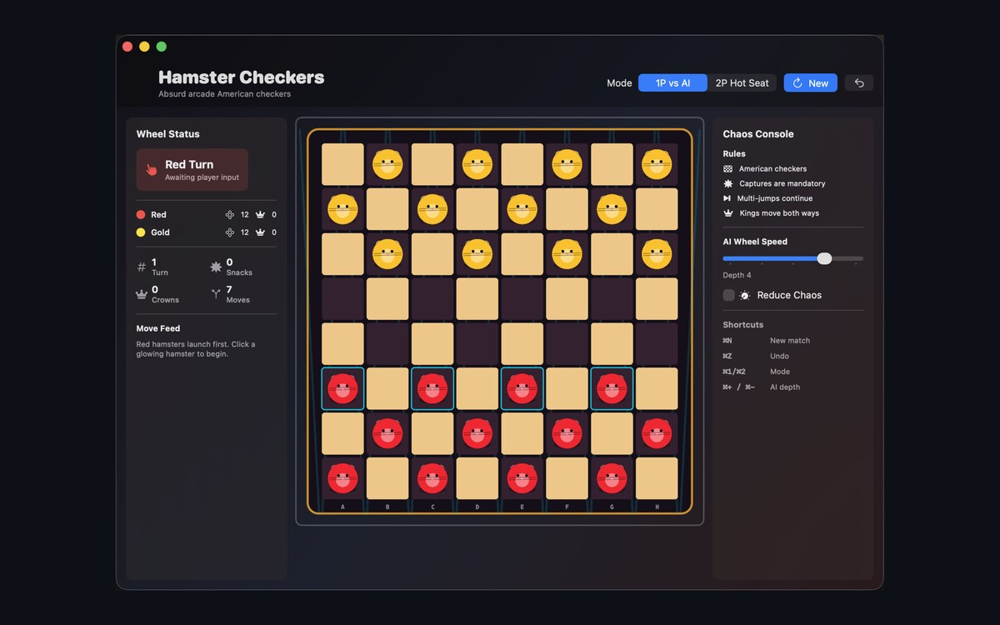

Bug Report
Crashes, rule mistakes, display issues, installation problems, or anything that does not behave as expected.
Open Bug TemplateSupport Center
Use the right issue template and include your platform, app version, Game Center sign-in state, and the exact move or screen where the problem happens.

Issue Templates
Crashes, rule mistakes, display issues, installation problems, or anything that does not behave as expected.
Open Bug TemplateSign-in, matchmaker, Auto-Match, active match refresh, resume, stuck turns, or turn delivery issues.
Open Online TemplateIdeas for clearer play, stronger accessibility, new settings, or better iPhone, iPad, and Mac behavior.
Open Feature TemplateBefore Filing
Tell us whether the problem happened during sign-in, New Online, Auto-Match, Refresh, active match opening, or Resume Online. Include both devices and whether each player was able to see the same match.
Describe the board state, whose turn it was, which piece moved, and whether a capture, multi-jump, king, undo, or no-move win looked wrong.